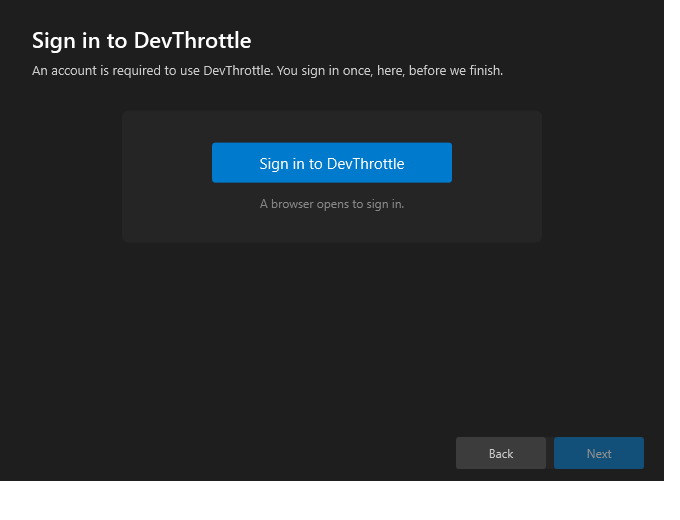
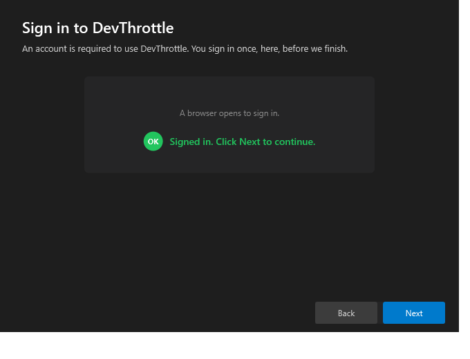
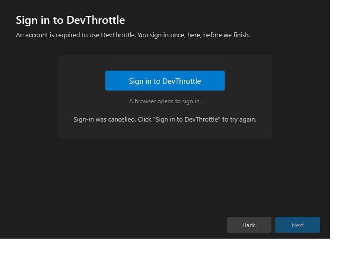

Part of the Installer first-run epic (#661): Welcome → Checks → Sign in → Privacy → Install → Done. Developer Agent proof. Branch issue-657-installer-signin-step.
<signin-url>?redirect_uri=<loopback> and listens on that loopback for the credential hand-back.CcDirector.Core.Account.LoopbackLoginListener for the loopback callback and FirstRunLoginCoordinator.BuildSignInUrl for the sign-in URL. The installer now references CcDirector.Core.Next is disabled on the Sign-in step until a sign-in completes. There is no skip. A completed sign-in stays completed if the user navigates Back and forward again.tools/cc-director-setup/CcDirectorSetup.csproj (reference CcDirector.Core) tools/cc-director-setup/Services/SignInRunner.cs (new - loopback sign-in orchestration) tools/cc-director-setup/Steps/SignInStep.xaml (new - the one-button step UI) tools/cc-director-setup/Steps/SignInStep.xaml.cs (new - waiting/cancel/timeout/success states) tools/cc-director-setup/MainWindow.xaml (new step 3 + renumbered sidebar to 6 steps) tools/cc-director-setup/MainWindow.xaml.cs (insert Sign-in after Checks; gate Next) tools/cc-director-setup.Tests/ (new test project - SignInRunner tests)
| Criterion | Result | Proof |
|---|---|---|
| After Checks the wizard shows a Sign-in step with a single "Sign in to DevThrottle" button; Next disabled until sign-in completes. | PASS | Screenshot 01: button present, Next dimmed/disabled. Sidebar order Welcome → Prerequisites → Sign in. |
Clicking opens the browser at <signin-url>?redirect_uri=<loopback>; completing (against the dev stand-in) captures the hand-back and enables Next. | PASS | Screenshot 02: green "Signed in" banner, Next enabled. Log line 5 shows the exact sign-in URL with the loopback redirect_uri. Driven against the live tools/devthrottle-dev-signin. |
| Cancel returns to a retryable state with a clear message; an abandoned sign-in times out and is retryable (no hang, no crash). | PASS | Screenshot 03: "Sign-in was cancelled..." with the button re-enabled. Timeout path covered by unit test RunAsync_NoHandBackWithinTimeout_ReturnsTimedOut (same code path). |
| The wizard cannot proceed to Install without a completed sign-in. | PASS | Next stays disabled until SignInCompleted fires (MainWindow gates Next on SignInStep.IsSignedIn); Screenshots 01 and 03 show Next disabled, 02 shows it enabled only after success. |
| The access token is never written to the installer log. | PASS | 04-installer-log-no-token.txt: a scan of the whole installer log finds no access_token / refresh_token / JWT value; the hand-back is logged only as "credential captured". |
SignInStep control)Captured by a throwaway WPF proof harness that hosts the real installer SignInStep + SignInRunner and drives them against the live dev sign-in stand-in via the real LoopbackLoginListener - the exact production code, without running the installer's install logic (so the machine's existing install is never touched).

One "Sign in to DevThrottle" button, "A browser opens to sign in." hint, and a dimmed (disabled) Next. IsSignedIn=False.

Green "Signed in. Click Next to continue." banner; Next is now bright/enabled. IsSignedIn=True, SignInCompleted raised. The hand-back came from the dev stand-in over the real loopback callback.

"Sign-in was cancelled. Click 'Sign in to DevThrottle' to try again."; the button is re-enabled and Next stays disabled. No hang, no crash.
[SignInRunner] RunAsync: starting installer sign-in hand-off [SignInRunner] RunAsync: sign-in url=http://127.0.0.1:8765/signin?redirect_uri=http%3A%2F%2F127.0.0.1%3A55198%2Fdevthrottle-login-callback%2F [SignInRunner] RunAsync: credential captured from the browser hand-back ... Token-leak scan over the WHOLE log file (access_token | refresh_token | JWT 'eyJ' prefix): RESULT: no token value found in the installer log (PASS)
Full excerpt: 04-installer-log-no-token.txt
New project tools/cc-director-setup.Tests - all 5 tests pass (build clean, zero warnings):
RunAsync_BrowserHandsBackCredential_ReturnsSignedIn Passed RunAsync_UserCancels_ReturnsCancelled Passed RunAsync_NoHandBackWithinTimeout_ReturnsTimedOut Passed RunAsync_BrowserCannotOpen_ReturnsFailed Passed SignInResult_SignedIn_ReportsSucceeded Passed Total: 5 Passed: 5
The success test drives a real LoopbackLoginListener end to end (no backend), the same contract the dev stand-in and the production backend use.
The setup projects are not part of cc-director.sln (the installer is built via its own path). Verified:
dotnet build tools/cc-director-setup/CcDirectorSetup.csproj - succeeds, 0 warnings.tools/cc-director-setup/build.ps1 - single-file win-x64 publish succeeds (cc-director-setup.exe).dotnet test tools/cc-director-setup.Tests - 5/5 pass.dotnet build cc-director.sln - succeeds (confirms the shared CcDirector.Core change does not break the rest of the product).No architecture or security drift. The change reuses existing Core account-loopback types; it introduces no new container and no new security posture. It honors the existing loopback trust boundary (loopback-only, 127.0.0.1) and the no-token-in-logs rule. The architecture manifest already documents the setup engine and the account gate; no manifest entry needs to change for a new wizard step that reuses an existing contract.
Observation for the epic (not a defect): referencing CcDirector.Core pulls its native dependencies (Whisper.net, SQLite) into the single-file installer, growing the published exe to ~139 MB. This faithfully follows the issue's "reuse the existing mechanism/contract" instruction; a later size-optimization (splitting the loopback types into a lean shared assembly) could be filed separately if the installer size matters.